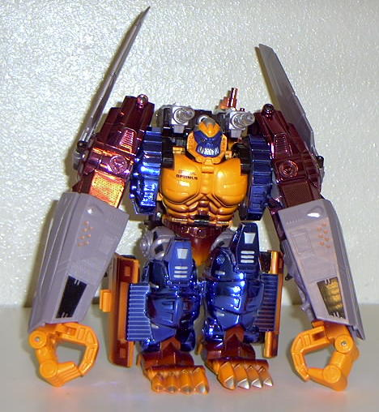

Allegiance
: Maximal
Size
: Super
Difficulty of Transformation
: Hard
Color Scheme
: Chrome deep blue,
chrome maroon, neon orange, silver, maroon, black, blue, brown, and clear,
colorless plastic
Rating
: 8.0

Beast mode is a metallized
ape. This mode is kind of cramped, but his face is very fierce and his
eyes glow orange when you pull a lever on his back (as long as you put
batteries in him). His hands are large, and although he doesnt have much
fur, he has short legs and long arms and looks like a gigantic battle ape.
His large feet are a nice touch, too. He has blast-off plates on his arms,
although they can come off easily and are somewhat annoying.
Vehicle mode number
one is a kind of tank. This mode is very sturdy and, along with the other
vehicle mode, has a little cockpit that you can put miniature Beast Wars
figures in. The cockpit is very detailed. Although his hands stick out
sort of awkwardly in the front, his armor plates and the rest of his body
look very nice, with an engine on the bottom of his feet. This mode is
very hard to transform into, though.
Vehicle mode number
two is a kind of plane. Although this mode looks sort of poor on the bottom
(like his ape mode with wings and his arms up), and his arms stick out
a bit, this mode looks nice with the cockpit, missle launchers(as well
as in the other three modes), and his engines on his feet. His wings look
small in proportion to his body, however.
Robot mode, from top
to bottom, is over a foot tall! His cockpit becomes his stomach. This mode
looks a lot like the ape mode, except for his face, which glows green when
you pull his lever; his missle launcher, which glow red when you pull his
lever; and his longer legs and arms are spread out farther from his body.
He has a gun, but he cant hold it very well in his hands. His feet look
sort of odd in this mode, but there are few extras in this mode, as well
as in any mode. His arms look oddly placed, too, and his face doesnt stay
in its place after a while very well.
A well-structured and
sturdy robot; highly recommended, although a bit odd-looking in robot mode.
This robot costs lots of moolah, and you need batteries not included with
the set to make his eyes and missle launchers light up. Large weapons,
and well worth the price.
Review by Beastbot